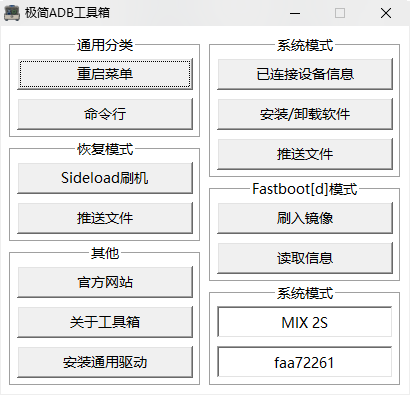

把复杂的 ADB 操作，放进一个熟悉的窗口。
重启菜单、命令行、Sideload 刷机、推送文件、安装通用驱动……常用功能按分类摆好，点一下就执行。免费、开源、无需配置环境变量。

最新版本 v1.2.0
极简 ADB 工具箱 · Windows 版，压缩包 27.6 MB。下载后解压运行即可使用。
文件托管在 GitHub，可选择国内镜像加速，也可切回官方原链接。
镜像站为第三方中转，下载异常时请切换回 GitHub 原链接。